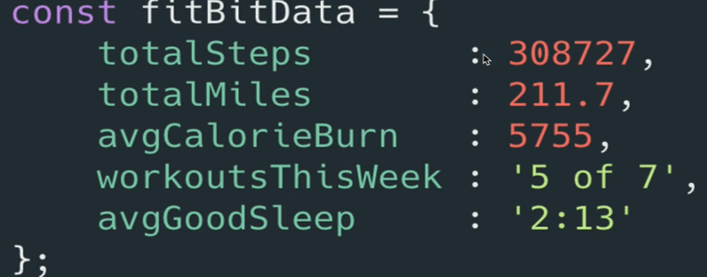

This is another data structure that is similar to an array, it allows for the combination of multiple pieces of data together, along with different types of data. There are two main topics within this section being "Creating & Working with Object Literals" and "Nesting Arrays & Objects". Objects are generally simpler than arrays without the push, pop etc.
Objects
These being the second data structure I'll be touching after learning about arrays, they allow the storage of multiple pieces of data in a sort of structure. Unlike arrays to where the whole idea is to order the data, like having a first, second, third and fourth thing etc. Instead the data is stored using things called key-value pairs or properties with a property being two pieces of information. One piece being the key and the other being a value. With these keys and values together they form pairs, some examples would be key: value "age: 20", "city: 'London'", etc.
There are restrictions when it comes to these but they'll be talked about later. But an object is just a bunch of these pairs together, though the pairs do not have to be ordered. So you can store these pairs within an object and retrieve them using a custom key.
Instead of using the example that Colt uses I'm going to use a different one which is instead of thinking about storing the stats of a fit bit or something similar. In my case I want to imagine storing Minecraft data, like the players statistics, I'm using this as my example because this, funny enough, is the thing that got me interested within coding to begin with.
A way to store these stats would be to use an array like so "[452321, 826482, 3249]" by just looking at this array, it doesn't really tell you much of what each piece of data is or does. A better way to do this would be with objects which are the things I'm going to be learning about and has peaked my interest again. With using an object I will be able to label things so then I have an idea to what the data corresponds to. Kind of how giving a variable a good name helps with understanding what the variable does.
I've looked a little into the next steps of the object and they seem pretty good/easily understandable which is nice to know.
With the image above you can see that this is an example of an object, though not mine (it's Colts from the course) you can see how the key and the value are linked. It's through the ":" colon. Something else that is interesting is that the entire object is set to a constant. I'm interested to know if these objects can be manipulated even though it's a constant.
When it's the Key AND Value, it's called a pair remember. With regards to the example above, the properties are in no given order. Along with all being inside one object. The properties in the example are stored within an object with the name of "fitBitData".
Property = Key + Value. To get the data out we need to know the key. Structurally storing data like this within an array doesn't make much sense. Thats where these objects come in. Storing data within an array makes sense when it's similar pieces of data like an array of ages for example. They're all similar but when it comes to storing different data then it's best to be used within the Object as this stores these values in a box almost and then the "box" is given a name. (I'm not 100% sure if I'm understanding this correctly or not.)
They also don't need to be accessed using a number to allow us to see a key piece of information, which can be quiet confusing trying to remember what indices goes with what piece of correlated data. So instead of asking for the value of indices 2 or something, when using an object you can request to see the data that corresponds with the key.
Creating Object Literals
Now that I understand a little about how the Object Literals work, I'm going to move onto trying to create an object now. When using "typeof" on an array like so "typeof []" it gives the output of "object". This is something that will happen within JavaScript, there's different things that will show up as being an object without looking like one but this will be explained.
Though, when talking about Object Literals, the reference is regarding the objects with the key and values, the data structure. The way to create these is with curly braces "{}", these things. Just like when creating arrays, objects are generally created as constants (const), as objects are also reference types meaning something like "const dog = {}" is like having dog pointing towards the object. Though the example I've used here will give me an empty object.
When creating an object literal, the name of the key goes first, colon, and then the value (keyName: valueValue). To get another key value pair in here, there needs to be a comma between the two key value pairs (keyNameOne: valueValue, keyNameTwo: valueValue). These can also be on separate lines when they're bigger objects but keeping smaller ones on the same line is fine.
Not only that but Object Literals also take a bunch of different input types. For instance it accepts Strings, Numbers, Arrays, Booleans. Keys are something separate though is what Colt says and I'm unsure what he means by this at this point. Objects can contain different types of values within the same object, they don't have to be of a singular value.
There's no real order within the Object unlike arrays, the only thing that matters is what a value is stored under, being the key name for the value.
Retrieving Data From Object
Now that I know how to create an object, it's time to try and retrieve the data from the object. Within the array this was done using the variable name of the array and then square brackets with the indices number inside. An example would look like arrayVariableName [3] (can replace 3 with any indices) doing this would give me the output of the indices position within that specified array.
Though with an object, using one of the ones I have declared within the object-literals.js file. Lets say I use playerOne as the example I want to pull from, I would like to try and get the value from the key lootedItems but how would I do this?
Option One
One option would be to do exactly the same thing as an array by using the objectVariableName and then use the square brackets to get one of the key placements to give an output. I'm going to test this myself quickly and see how it works. I've tested this and it's weird because I would have expected at least something like the output of the key name or the value for the key to be in the console. The only thing I seem to be getting is "undefined".
Something that Colt mentions is that instead of using the square brackets some people may think that using the curly brackets would make more sense, basically meaning objectVariableName {1} instead of [1], though to me the square brackets make more sense because it's the same way to do it for arrays. This just makes sense to me the way it actually works. But when talking about objects the only time to use the curly braces is when declaring the object/creating it.
I just learned to why this didn't work, it's because instead of using the indices of the output I'm wanting, I need to use the key name within the brackets so something like ["firstName"] would work. Basically arrays use indices, object use key name. When using the key name within the square brackets, there's a reason to why it needs to be surround by the quotation marks though it's not actually a String. I'll learn about this a little later.
When inputting something other than one of the key names for the output within the square brackets for a object. If there is no match for the square brackets input and the object keys then it will return the output of undefined.
Option 2
Another option to do this would be to use the dot syntax instead of the square bracket syntax. Similar to how you can do something like prompt("Input your name here").toUpperCase, the .toUpperCase is the part I'm talking about. Well you can do this with the variable name of the object too. Just like objectVariableName.keyName, or a better way to see this would be with an example within the object-literals.js file. Better example being "playerTwo.blocksMined". This is honestly pretty cool.
I also mentioned something about these objects making more sense to me compared to objects in languages such as Java and they told me that is probably the worse thing to say, meaning I need to learn Java objects properly and which is what I tend to do when I build some website projects.
When trying to do (playerTwo."keyName"), this breaks the script file due to JS looking for an operator name after the period but can't find one so it breaks. There needs to be no quotation mark surround the key name after the object variable name. For colt testing this it says unexpected String, though for me it says "missing name after . operator". Also the same concept of using ("Any String Goes Here".length)
The Difference
Even though this second option may seem easier, there is a distinction between the two options. To begin to understand this I need to go back to the creation of the object itself. I'll create a new object within the connected JS file to this HTML document. It has the name of "objectTest", it contains my favourite numbers being 2 and 82 but also a bad number of 13.
When using the console to check the new object, it shows the different key names like it did with the text key names, they don't look any different. When giving an object something other than text or letters I should say for the key name. In the background regardless of what is put there for the key name, it is converted into a String. Though symbols like * are exempt for this which will be covered later as they're not super common.
What this means is that when I normally see a Number and String in console the number looks like (323923) and a String would look like ("Hi I am String").